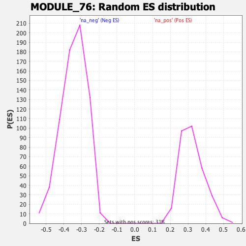

| | | Dataset | DE_genes |
| Phenotype | NoPhenotypeAvailable |
| Upregulated in class | na_pos |
| GeneSet | MODULE_76 |
| Enrichment Score (ES) | 0.761994 |
| Normalized Enrichment Score (NES) | 2.3558764 |
| Nominal p-value | 0.0 |
| FDR q-value | 0.0 |
| FWER p-Value | 0.0 |
Table: GSEA Results Summary
 Fig 1: Enrichment plot: MODULE_76
Fig 1: Enrichment plot: MODULE_76
Profile of the Running ES Score & Positions of GeneSet Members on the Rank Ordered List
| PROBE | GENE SYMBOL | GENE_TITLE | RANK IN GENE LIST | RANK METRIC SCORE | RUNNING ES | CORE ENRICHMENT | | 1 | CCL8 | | | 7 | 15.196 | 0.0801 | Yes |
| 2 | CCL4 | | | 9 | 14.658 | 0.1578 | Yes |
| 3 | ALOX5AP | | | 17 | 12.616 | 0.2242 | Yes |
| 4 | CCL11 | | | 22 | 11.788 | 0.2865 | Yes |
| 5 | S100A12 | | | 35 | 9.970 | 0.3385 | Yes |
| 6 | CCL7 | | | 70 | 7.435 | 0.3757 | Yes |
| 7 | CXCL10 | | | 86 | 6.536 | 0.4094 | Yes |
| 8 | CCL19 | | | 99 | 6.189 | 0.4415 | Yes |
| 9 | FPR1 | | | 103 | 6.054 | 0.4734 | Yes |
| 10 | CCL3 | | | 130 | 5.365 | 0.5001 | Yes |
| 11 | C3AR1 | | | 143 | 5.080 | 0.5263 | Yes |
| 12 | S100A9 | | | 156 | 4.688 | 0.5504 | Yes |
| 13 | CCR1 | | | 175 | 4.383 | 0.5724 | Yes |
| 14 | CCL18 | | | 201 | 3.823 | 0.5911 | Yes |
| 15 | CYBB | | | 231 | 3.449 | 0.6075 | Yes |
| 16 | IL1A | | | 261 | 3.130 | 0.6222 | Yes |
| 17 | TLR1 | | | 283 | 2.887 | 0.6361 | Yes |
| 18 | CCL2 | | | 284 | 2.886 | 0.6514 | Yes |
| 19 | CXCL11 | | | 310 | 2.681 | 0.6640 | Yes |
| 20 | SAA1 | | | 314 | 2.654 | 0.6779 | Yes |
| 21 | NMI | | | 339 | 2.523 | 0.6897 | Yes |
| 22 | IL1B | | | 343 | 2.495 | 0.7028 | Yes |
| 23 | FPR2 | | | 349 | 2.445 | 0.7154 | Yes |
| 24 | CXCL6 | | | 421 | 2.072 | 0.7218 | Yes |
| 25 | CXCR2 | | | 429 | 2.008 | 0.7320 | Yes |
| 26 | PLA2G7 | | | 442 | 1.968 | 0.7416 | Yes |
| 27 | LY86 | | | 488 | 1.804 | 0.7482 | Yes |
| 28 | BCL6 | | | 612 | 1.442 | 0.7479 | Yes |
| 29 | TLR2 | | | 698 | 1.278 | 0.7492 | Yes |
| 30 | LY75 | | | 769 | 1.161 | 0.7508 | Yes |
| 31 | AIF1 | | | 771 | 1.159 | 0.7568 | Yes |
| 32 | LYZ | | | 785 | 1.131 | 0.7620 | Yes |
| 33 | CXCL13 | | | 1108 | 0.748 | 0.7450 | No |
| 34 | AOAH | | | 1146 | 0.724 | 0.7465 | No |
| 35 | PTX3 | | | 1243 | 0.648 | 0.7437 | No |
| 36 | PTAFR | | | 1254 | 0.637 | 0.7464 | No |
| 37 | C3 | | | 1577 | 0.480 | 0.7280 | No |
| 38 | CCL20 | | | 1581 | 0.479 | 0.7304 | No |
| 39 | AGER | | | 1700 | 0.433 | 0.7250 | No |
| 40 | CCL13 | | | 1770 | 0.401 | 0.7226 | No |
| 41 | NFKB1 | | | 1815 | 0.385 | 0.7218 | No |
| 42 | IL1RAP | | | 2066 | 0.305 | 0.7072 | No |
| 43 | TIRAP | | | 2141 | 0.284 | 0.7039 | No |
| 44 | ALOX5 | | | 2516 | 0.205 | 0.6807 | No |
| 45 | CEBPB | | | 2617 | 0.186 | 0.6752 | No |
| 46 | CXCL1 | | | 2830 | 0.158 | 0.6623 | No |
| 47 | CD14 | | | 2927 | 0.147 | 0.6568 | No |
| 48 | CXCL9 | | | 3057 | 0.135 | 0.6491 | No |
| 49 | CX3CL1 | | | 4512 | 0.041 | 0.5549 | No |
| 50 | CCL17 | | | 4682 | 0.033 | 0.5441 | No |
| 51 | PTGS2 | | | 4760 | 0.028 | 0.5392 | No |
| 52 | ALOX15 | | | 4985 | 0.017 | 0.5248 | No |
| 53 | CCR5 | | | 5803 | -0.026 | 0.4718 | No |
| 54 | CXCR4 | | | 5988 | -0.038 | 0.4601 | No |
| 55 | FN1 | | | 6107 | -0.047 | 0.4527 | No |
| 56 | AOX1 | | | 6641 | -0.084 | 0.4185 | No |
| 57 | CCL21 | | | 6653 | -0.085 | 0.4182 | No |
| 58 | ADORA1 | | | 6749 | -0.091 | 0.4125 | No |
| 59 | ORM1 | | | 6933 | -0.106 | 0.4012 | No |
| 60 | CCR2 | | | 7409 | -0.145 | 0.3711 | No |
| 61 | TLR3 | | | 8605 | -0.263 | 0.2949 | No |
| 62 | C5 | | | 8664 | -0.270 | 0.2926 | No |
| 63 | IL1R1 | | | 9853 | -0.425 | 0.2176 | No |
| 64 | CD40 | | | 9945 | -0.439 | 0.2141 | No |
| 65 | CXCL5 | | | 10222 | -0.480 | 0.1987 | No |
| 66 | CXCL14 | | | 10622 | -0.541 | 0.1756 | No |
| 67 | CCL23 | | | 10746 | -0.560 | 0.1706 | No |
| 68 | ANXA1 | | | 11745 | -0.750 | 0.1097 | No |
| 69 | CXCL12 | | | 11856 | -0.773 | 0.1067 | No |
| 70 | BDKRB2 | | | 12299 | -0.877 | 0.0826 | No |
| 71 | CXCL2 | | | 12622 | -0.959 | 0.0668 | No |
| 72 | ABCF1 | | | 14355 | -1.691 | -0.0367 | No |
| 73 | TPST1 | | | 14371 | -1.698 | -0.0287 | No |
| 74 | AOC3 | | | 14595 | -1.867 | -0.0333 | No |
| 75 | MGLL | | | 15146 | -2.538 | -0.0556 | No |
| 76 | NFATC4 | | | 15244 | -2.762 | -0.0472 | No |
| 77 | ADORA2A | | | 15293 | -2.894 | -0.0350 | No |
| 78 | FOS | | | 15471 | -8.771 | -0.0000 | No |
Table: GSEA details [plain text format]

Fig 2: MODULE_76: Random ES distribution
Gene set null distribution of ES for MODULE_76